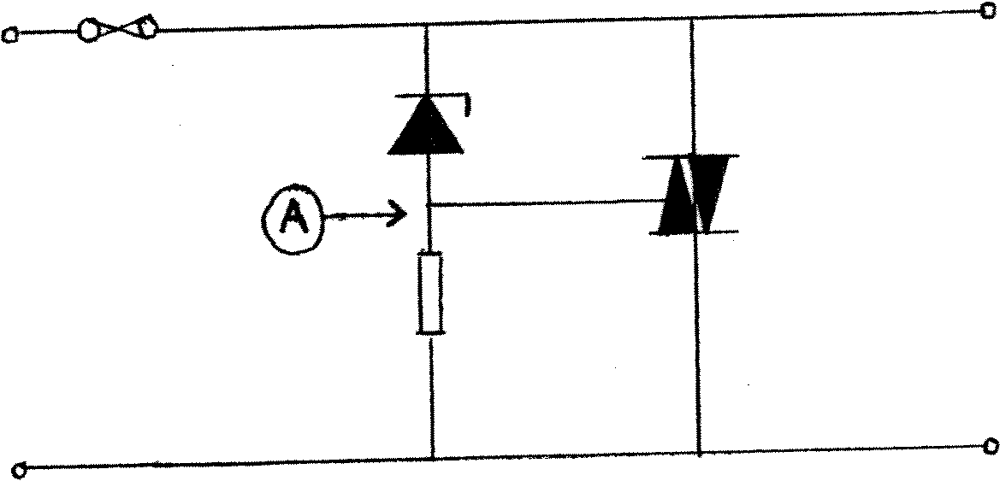

80-Bus News |
March–April 1984 · Volume 3 · Issue 2 |
| Page 11 of 51 |
|---|
hard on, effectively short-circuiting the output and blowing the fuse. The triac will remain turned on until current ceases to flow through it (i.e. the fuse blows and/or the power is turned off). Note that the crowbar is fitted after the fuse: if it were fitted before the fuse, then should the fuse blow the computer would no longer be protected against peripherals putting what they like onto the 5v rail. I shall, in the best tradition of these things, leave it as “an exercise for the reader” to verify that the circuit also works should the power supply go more negative than −0.7v. It goes without saying that if you change the zener, you can use it on the other power rails.
Once I had got CP/M going, the first thing I did (alright – the second, first thing I did was to backup the master disk) was to install Monitor.Com, using NASSYS 3 as the starting point. As many of you who are using this excellent piece of software are probably aware, there are a couple of minor “bugs” in the software, which are only significant if you (a) use overlays, and (b) like filling the disk up! Before describing how to fix these “features”, I shall describe how I found them and what I did.
To help ease the transition to disk and CP/M, I modified Zeap, Nasdis, Debug to use the revised screen addresses, and I also took the opportunity to relocate them to 1000 hex. I was soon “REVASing” files, and then loading Zeap “in over NasDis to edit the file. Needless to say it didn’t appear to work: the start of the “REVASed” file appeared to be total garbage. The excellent debug facilities of NASSYS soon pointed me in the right direction: the Fetch routine appeared to be loading the last 128-byte block twice. I verified (using DDT) that it wasn’t a “feature” of CP/M itself, and so dis-assembled the disk drivers that Chris had added. I then referred to the CP/M manuals to find out what the code did.
It appeared that the Fetch routine was loading each 128-byte block, and then checking the BDOS error code. Thus when the end-of-file was reached, this wouldn’t be detected until after the buffer (which contained the previously-loaded block) had been copied (again). Luckily, most of the disk drivers in Monitor.Com appear to be written in 8080 code, rather than more compact Z80 code, so the “patch” (what a horrible word “Patch” is!) is fairly simple. It consists of moving a few instructions and changing a few more instructions. (Note that you can use Monitor.Com for this one – anyone using DDT earns themself the “Dodo of the Decade” award.) Note also that all addresses given assume that Monitor.Com was typed in at the same addresses as in the original (Micropower), and sub-sequent, articles.
| Page 11 of 51 |
|---|